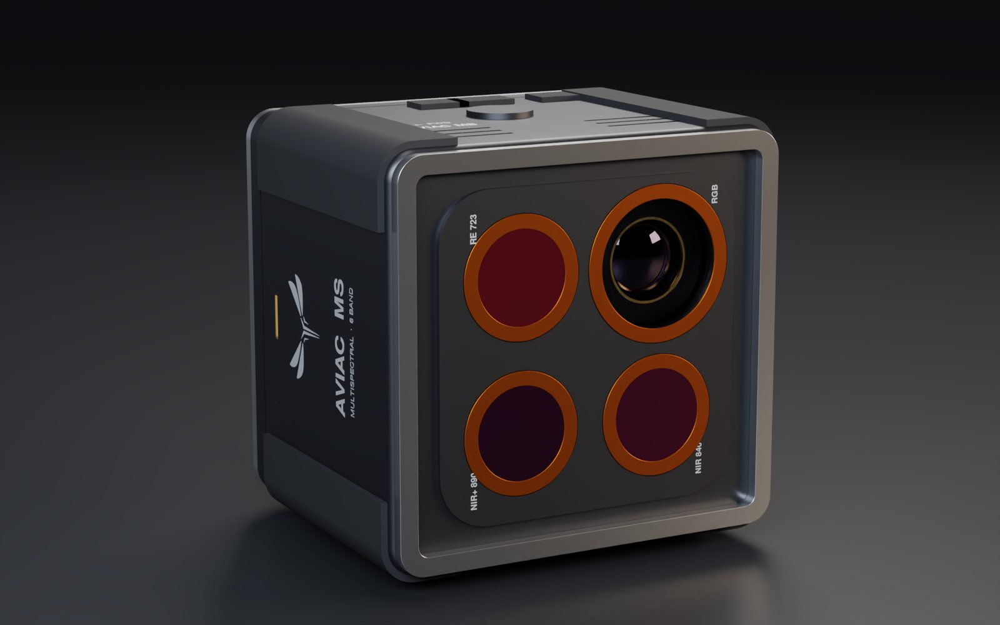
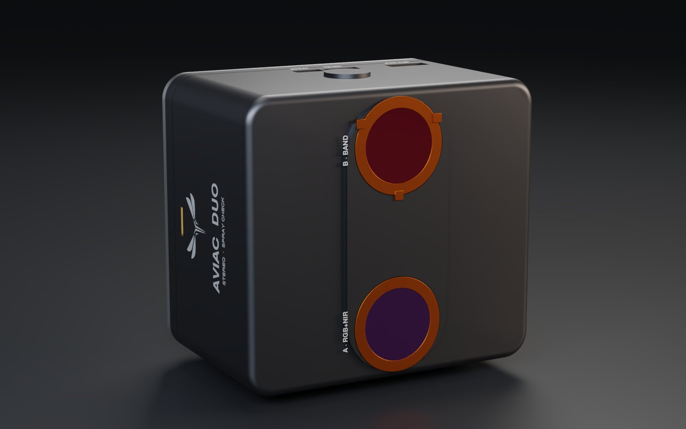
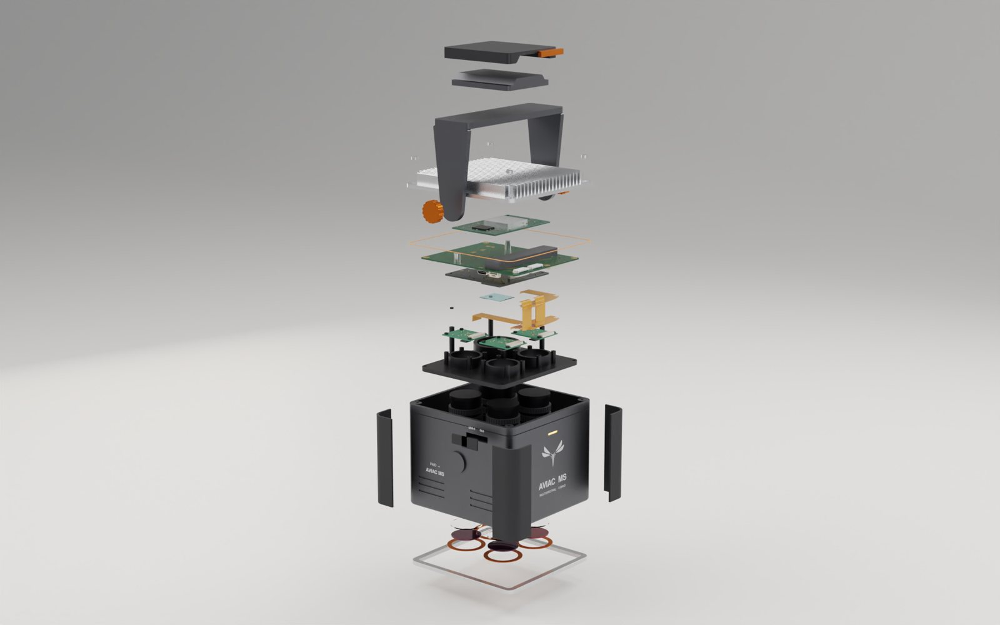
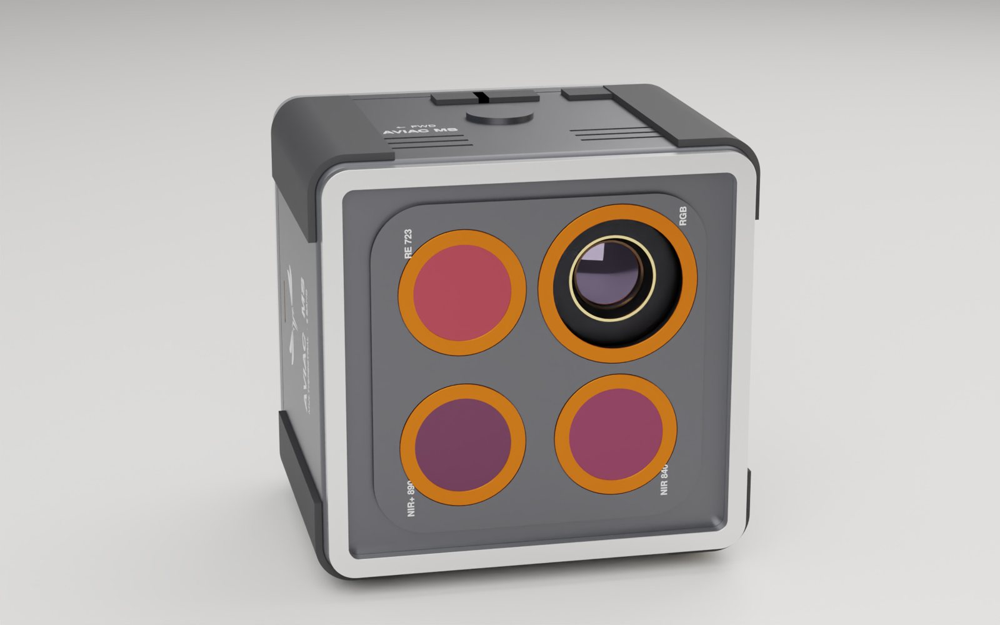
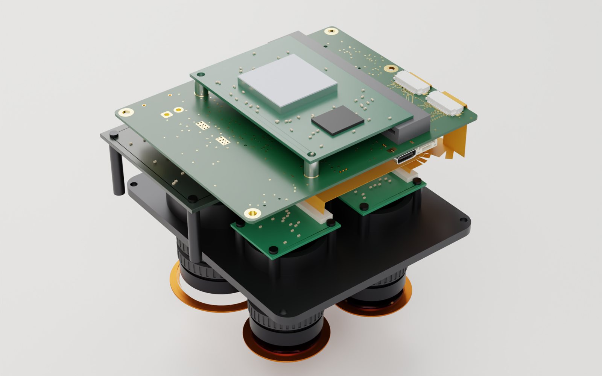

Rugged aluminium cameras with an on-board computer. They see the crop in bands the eye cannot, process in flight, and land with the answer.
A six-band multispectral camera for farms of 100 to 1,000 acres. A Sony IMX565 for colour and three Mira220 sensors for red edge and near infrared, all four lenses on one machined plate and fired together.
A stereo camera that clamps to any spray drone. It sees the strip just sprayed, maps coverage and gaps live, measures canopy height in stereo, and re-checks the crop days later.
Short-wave infrared sees water in leaves and soil. It is for irrigation scheduling, drought stress and mineral mapping. It will use the same body, computer and mounts as the MS and Duo.
Design figures, calculated from the parts chosen. Measured figures follow the first field trials.
From blue to extended near infrared, on one trigger.
An NVIDIA Jetson inside each camera computes indices and detections while the drone flies, so the map is ready when it lands.
The Jetson presses into a finned aluminium lid and the flight air cools it. There is no fan to clog with dust or spray.
Every sensor fires on one hardware edge.
Hard anodised, with rubber corner guards and a steel skid rim.
3S to 6S straight from the flight battery.
At 100 m and 18 m/s on a fixed-wing.




